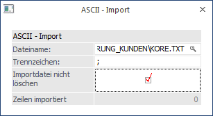
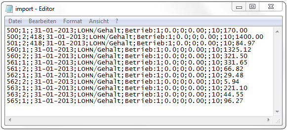
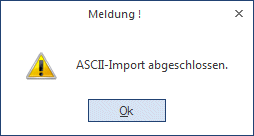

In diesem Menüpunkt können Kore-Journalzeilen in ASCII-Daten (z.B. aus externen Programmen, aus dem Lohn) importiert werden.

Ø Dateiname
Hier wird der Name der Datei eingegeben, aus der die Kostenrechnungsbuchungen übernommen werden sollen.
Ø Trennzeichen
Hier kann das Trennzeichen eingegeben werden, mit dem die einzelnen Felder in der ASCII-Datei getrennt sind. Standardmäßig wird der Strichpunkt vorgeschlagen.
Ø Importdatei nicht löschen
Ist die Checkbox aktiviert, bleibt die ASCII-Datei nach dem Import erhalten. Dies kann aber dazu führen, dass die Buchungen öfters übernommen werden.
Hinweis
Wenn die Datei nicht vorhanden ist, wird ein entsprechender Hinweis ausgegeben.
Mögliches Beispiel für eine ASCII-Importdatei: Zur korrekten Durchführung beachten Sie bitte die Beschreibung zum Aufbau der Importdatei. Bitte beachten Sie auch, dass die Datei am Ende keine leeren Textzeilen / Leerstellen aufweisen darf.

Aufbau der Importdatei
Ø Kostenart
20stellig, alphanumerisch, Buchstaben müssen groß geschrieben werden
Ø Kostenstelle
20stellig, alphanumerisch, Buchstaben müssen groß geschrieben werden
Ø Kostenträger
20stellig, alphanumerisch, Buchstaben müssen groß geschrieben werden
Ø Datum (TT-MM-JJ)
8 Stellen Text
Ø Belegnummer
7 Stellen Text
Ø Text
25 Stellen Text
Ø FW-Betrag
11 Vorkomma-, 2 Nachkommastellen
Ø FW-Code
3stelliger FW-Code (wie im Fremdwährungsstamm angelegt z.B. USD)
Ø Einh. Betrag
11 Vorkomma-, 2 Nachkommastellen
Ø Einh. Code
3stelliger Code der Einheit- (z.B. STD)
Ø Variator
2 Stellen Zahl min = 0, max = 10
Ø Betrag
11 Vorkomma-, 2 Nachkommastellen
Ø Pers.Kto
20stellig, alphanumerisch, Buchstaben müssen groß geschrieben werden.
Ø Bei den Zahlen ist als Dezimalzeichen der Punkt zu verwenden.
Durch Drücken der F5-Taste wird der Übernahmelauf gestartet. Durch Drücken der ESC-Taste wird das Fenster geschlossen. Beim Übernahmelauf wird auch eine Prüfung der Daten vorgenommen.
Folgende Felder werden beim Import auf ihre Richtigkeit geprüft:
Ø Kostenstelle
Die Kostenstelle muss angelegt sein.
Ø Kostenart
Die Kostenart muss angelegt sein.
Ø Datum
Das Datum wird auf die Richtigkeit geprüft.
Ø FW-Code
Der Fremdwährungscode muss angelegt sein.
Ø Einh. Code
Der Einheiten-Code darf nur 2stellig und zwischen 0 und 99 sein.
Ø Variator
Der Variator darf nur größer gleich 0 und kleiner gleich 10 sein.
Wurden beim Prüflauf Fehler entdeckt, wird die Meldung
angezeigt. Im Import-Protokoll werden alle fehlerhaften Datensätze angezeigt, wobei bei jeder Zeile angeführt wird, um welchen Fehler es sich handelt.
Vor dem Import werden unter anderem folgende Kriterien überprüft:
ü ob bei Verwendung einer Gemeinkostenart kein Kostenträger übergeben wird,
ü ob der übergebene Kostenträger vorhanden ist,
ü ob die übergebene Kostenstelle vorhanden ist
Findet der Prüflauf keine Fehler, werden die Daten übernommen und es erscheint die Meldung
